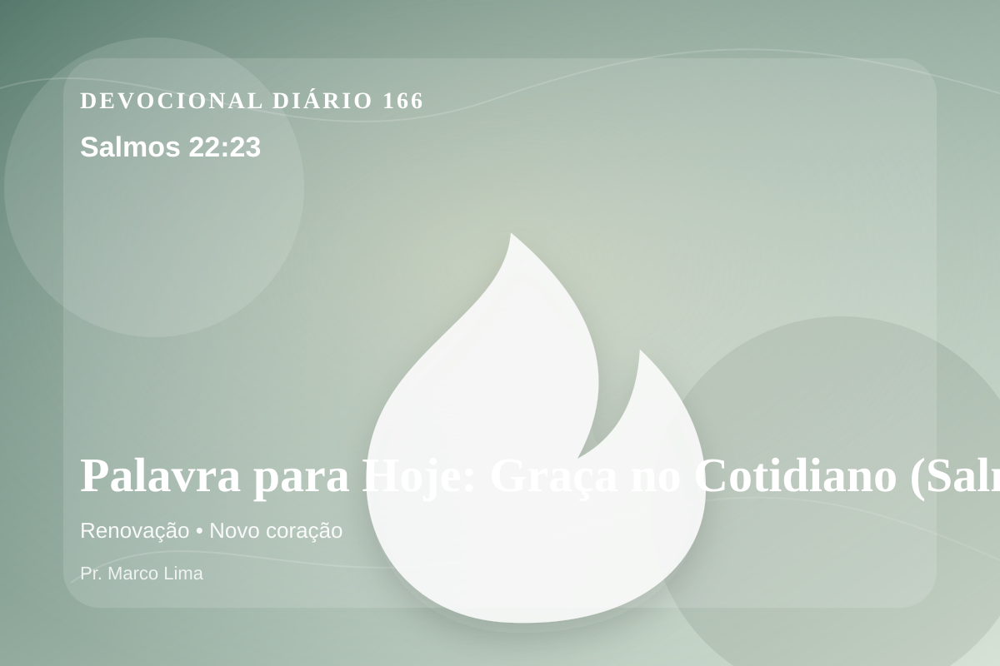

Palavra para Hoje: Graça no Cotidiano (Salmos 22:23)
Vós que temeis ao SENHOR, louvai a ele! E vós, de toda a semente de Jacó, glorificai a ele! Prestai culto a ele, vós de toda a semente de Israel.
Pensamento
Esta meditação olha para a mesma verdade por outro ângulo, buscando obediência concreta e não apenas informação. Hoje, Salmos 22:23 não deve ser lido como uma frase isolada, mas como uma Palavra de Deus para alcançar a consciência e reorganizar a vida diante de Cristo.
Salmos 22:23 chama o coração a ouvir Deus com reverência e responder com fé prática. A Palavra não foi dada para enfeitar pensamentos religiosos, mas para conduzir pessoas reais ao Senhor.
O tema de renovação precisa ser recebido com simplicidade e seriedade. Esse ensino precisa descer da mente para a prática. Este tema aponta para a maneira como Deus forma o coração do Seu povo por meio da Palavra. A aplicação correta não nasce de frases soltas, mas de uma leitura reverente, contextual e obediente do texto bíblico.
Pergunte com honestidade: tenho obedecido a Deus nessa área ou apenas concordado com o texto? A fé bíblica não se contenta com admiração; ela se expressa em arrependimento, confiança e passos concretos.
Arrependimento não é apenas sentir peso na consciência; é voltar-se para Deus, abandonar o caminho que entristece o Senhor e confiar que a graça de Cristo é suficiente para perdoar e transformar.
Este é o evangelho que sustenta toda aplicação: Jesus Cristo morreu pelos pecadores, ressuscitou em vitória e chama cada pessoa a responder com fé, arrependimento e uma vida rendida ao Seu senhorio.
O evangelho é a resposta mais profunda para essa necessidade: Jesus morreu pelos nossos pecados, ressuscitou e chama pecadores ao arrependimento e à vida nova.
Hoje, escolha uma atitude pequena e verificável: uma oração honesta, uma conversa corrigida, um pedido de perdão, uma renúncia ou uma decisão de obedecer sem adiar.
Para Praticar Hoje
- Leia Salmos 22:23 lentamente e destaque uma palavra ou expressão central do texto.
- Confesse a Deus um pecado, resistência ou frieza espiritual que esta Palavra revelou.
- Declare sua fé em Jesus Cristo e pratique hoje uma atitude concreta de arrependimento e obediência.
Oração
Pai, onde há resistência em mim, rende. Onde há obediência, fortalece. Salmos 22:23 revela que Deus fala e espera resposta. Que eu não trate esta Palavra como mais um devocional, mas como convite para caminhar mais perto de Jesus. Ensina-me a responder com simplicidade.
{kind=link}